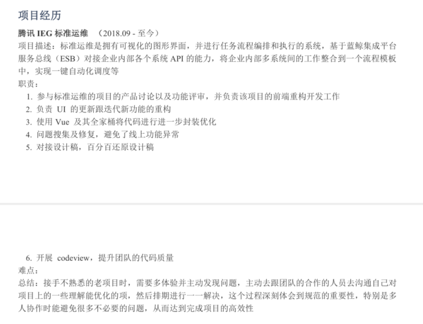
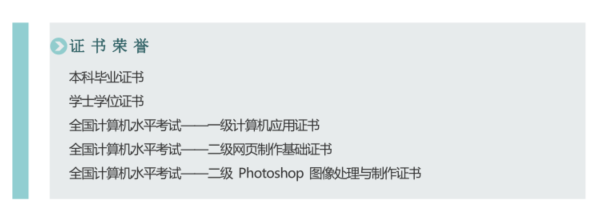

面试知识点 - 简历
Create by jsliang on 2019-6-15 07:23:40
Recently revised in 2019-6-16 12:29:03
Hello 小伙伴们，如果觉得本文还不错，记得给个 star，或者关注一波公众号，每天进行折腾，保持自己的最高价值！GitHub 地址

六月飞霜，对于现在毕业等于失业的广大应届生，或者各种原因出来了想找份 “好” 工作的大佬来说，这无疑是个尴尬的季节，大部分公司的坑位已经被占满，奈何身有丈八法威而跨不过小小门槛……
本文记录于 jsliang - 2019 面试专栏
一 目录
不折腾的前端，和咸鱼有什么区别
| 目录 |
|---|
| 一 目录 |
| 二 前言 |
| 三 简历的编写 |
| 3.1 基本资料 |
| 3.2 专业技能 |
| 3.3 工作履历 |
| 3.4 实习经历/项目经历 |
| 3.5 教育背景 |
| 3.6 技能证书 |
| 3.7 自我评价 |
| 四 简历的投递 |
| 五 面试小技巧 |
| 六 总结 |
二 前言
天才第一步，雀氏纸尿裤……
额(⊙o⊙)…不对，拿错稿子了，咱换换：
在我们的求职生涯中，第一步需要拿下的，无非是简历的投递，毕竟再牛 B 的大佬，也要简历到 HR 手中，才能发光发热。
OK，话不多说，本篇文章内容主题为：
- 简历的编写。不求 HR 小姐姐看了眼球一亮，但求看了能约你过来试试。
- 简历的投递。在智联、拉勾、Boss 直聘这些 App 上，我们如何鉴别一家公司，如何进行海投，如何明确心目所属。
- 沟通的技巧。通过沟通 HR 以及面试官，最终目标：获得 offer。
本文由 jsliang 结合身边前端、HR 以及个人经历编写而成，希望能帮助到在这季节毕业面临失业，或者淡季难以找到合适公司的小伙伴。
三 简历的编写
首先，简历的编写，是由 jsliang 日常帮小伙伴改简历的过程中，从 30 多份小伙伴的简历总结出来的一套经验。
小伙伴需要改简历的可以在 jsliang 文档库 首页查看 jsliang 的最新联系方式。
然后，关于简历，jsliang 个人建议简历的内容应分为：
- 基本资料
- 专业技能
- 工作履历
- 实习经历/项目经历
- 教育背景
- 技能证书
- 自我评价
最后，限于个人眼界，毕竟 jsliang 仅仅阅读浏览并帮忙修改了 30 来篇前端小伙伴的简历，肯定比不上 HR 小姐姐每日浏览近千份的情况，所以小伙伴们可以在 jsliang 的建议上进行增删改，从而做到最适合自身的简历。
3.1 基本资料
基本资料应包括：
- 姓名。基本信息。
- 电话。基本信息。
- 电子邮箱。基本信息。
- 求职意向。填 Web 前端 或者 Web 前端工程师 均可。
- 工作年限
（选填）：非应届/实习的小伙伴，如实填写自身的工作年限即可，例如 jsliang 的填写即是 工作年限：1 年。 - 年龄
（选填）。如果你足够年轻，并且足够牛 B，那么请填上这栏。例如，20 岁的高级前端工程师怎么也会让人眼前一亮！PS：25 以前的年龄都可以填写，如果你要显示你的年龄优势的话。 - 学校
（选填）。很多实习或者应届毕业的小伙伴喜欢填个学校。但是，如果你的学校不是特别出名，那么还是不建议你填写这个。 - 教育层次
（选填）。这是个非常让人纠结的事情，如果你是 本科 及以上，那么你可以安心填写，有些岗位还是挺看重这个的；如果你是 专科 及以下，建议你还是放在下面的 【教育背景】 模块中略微提及，虽然这样很对不起 HR 小姐姐，但是唯有这样才能让你的简历不是死在第一行中。 - 到职状态
（选填）。离职随时入职、在职看情况……按个人情况填写即可。如果嫌麻烦，那就不填写了。 - 博客/GitHub
（选填）。加分项。如果你有自己的 GitHub 或者博客，并且内容足够多的，获得的点赞 / star 也有，那么你可以填写上来。但是，如果你的 GitHub 是个空白的，或者博客只有寥寥几篇，那么还是不要 “献丑” 了。 - 政治面貌
（选填）。如果你准备面试国企，并且你是党员，那么请填写 党员 或者 共产党员。如果不是，那么没必要填写这项。
那么，我们还是参考下一个小伙伴的基本资料：
3.2 专业技能
关于专业技能，除了常见的不要写 精通 某技能之外，小伙伴应尽可能地把自己的优势展示出来。
然后，越是个人想展示给 HR 小姐姐或者面试官看的技能，那么就越放在前面。比如：熟悉 React 及其全家桶（React Redux、Saga……）的开发模式。
那么，我们查看下其他小伙伴都是怎么写的：
- 小伙伴 A 的个人技能：
熟悉 JavaScript 核心基础；掌握 ES6 常用语法；
懂得使用 Vue.js 框架开发项目，了解 Vue.js 全家桶；
懂得使用 Bootstrap，AntD 等前端 UI 框架，了解 Sass，Stylus 等 CSS 预处理器；
懂得使用 Git，SVN 等工具的常用操作来进行团队合作开发；
懂得使用 Webpack 对项目进行模块打包并了解过其原理；
了解 Node,js，使用过 Express 和 MongoDB 并开发过小型项目；
了解 Trao 多端开发；
了解微信公众号开发；
了解云服务器的基本搭建部署和运作流程。
- 小伙伴 B 的个人技能：
* 熟练掌握 HTML5 标签和 CSS 运⽤用以及新增的属性进⾏页面重构；
* 熟练掌握并会运用前端的基本框架和类库：jQuery、ECharts、Zepto 等；
* 熟练运⽤响应式布局和弹性盒布局，利⽤ rem、px 和百分比进行移动端的布局；
* 熟练运⽤ Vue 框架，擅⻓ Vue 全家桶 + ElementUI 进⾏项⽬的开发；
* 熟练运⽤ Bootstrap，Layui，AdminLTE，MUI 等前端框架的应用，能够快速实现⻚面的开发；
* 熟练使⽤ Sublime、VS Code、WebStorm 等开发工具；
* 熟练使⽤ Sass 预编译，实现 CSS 的管理和维护；
* 熟悉 ES6 语法糖；
* 了解 Webpack 前端自动化构建工具以及 Git 代码托管工具；
* 了解 React 框架，小程序开发；
在编写专业技能的时候，请注意大小写，例如：CSS 而不是 css 等……
如果不清楚它正确表述，请百度找到正确的。
3.3 工作履历
工作履历不需要着重编写，但是需要基本的信息都填写好。
直接看相关例子：
当然，需要强调的是：
- 技能一定要大小写正确！
Vue.js 而不是 vuejs 或者写个 vue，万一 HR 小姐姐就看中你这个大小写错误呢？！
3.4 实习经历/项目经历
关于 实习经历 或者 项目经历，jsliang 给的唯一值得注意的是，尽量把你项目的 重难点 以及你的解决方式写出来。
首先，怎么说呢，好比我曾经开发过一个微信小程序：
+ 项目一：微信小程序 XXX。
在只有一个人开发的情况下，将 UI 的 30 多张 PSD 转换成小程序页面。
项目难点：在编写通讯录的时候，其中有个插入用户信息功能，需要插入到具体位置。
通过二分法的查找，快速定位到具体位置，并将页面滚动到具体位置。
然后，小伙伴们可以再看看具体的：

当然，这里是小伙伴在 jsliang 的建议下，先放了个 难点 填坑，还没有具体写 难点 在哪。
最后，小伙伴需要注意的是，如果这个项目是 著名公司 领导的，那么你可以开头写一下这个公司，例如 腾讯 XX 项目、阿里 ZZ 项目……
3.5 教育背景
非重点。
教育背景对于 jsliang 这种情况来说，一般不想编写，毕竟真不是很出名，虽然自身是 本科，但是觉得写出来就是个耻辱，可又不得不写出来。
所以还是仅推荐名牌大学，或者有考研、考博之类的情况，进行详备填写。
如果是 jsliang 这种情况，请一句话概括：
2014.09-2018.06 广州大学华软软件学院 信息管理与信息系统 本科
3.6 技能证书
jsliang 自认为是比较渣的一个人，连四级都没过，所以只要有证书的，都填写上去，尽管不显眼，但是看起来多：

另外，只能写 国家级 证书，什么 校三好学生 之类的就算了。
并且 结婚照、驾照 这些跟你面试的工作没有半毛钱关系的证书不要写，要不然 HR 会丢你个白眼。
啊，好羞耻，下一节下一节。
3.7 自我评价
关于自我评价，那就是见仁见智了，如果小伙伴还是比价喜欢折腾的，那么，把你折腾的东西 show 出来吧！
当然，这是 2019 年 3 月份的简历了，掘金 和 GitHub 的增长，好像不止这个了……
四 简历的投递
经过上面的努力，小伙伴们应该把自己的简历给编写出来了。
那么，关于简历的投递上，小伙伴们有什么需要注意的呢？
- 内推优先。如果你觉得自己还是 OK 的，并且有小伙伴愿意给你内推，那么，请尝试通过内推渠道把自己推上去，毕竟内部渠道还是较有优势的。
- 专科不怂。专科的小伙伴不要限制自己。虽然某公司标明招聘本科，但是小伙伴如果对自己有自信，并且非常想进这家公司，那么请尝试勾搭下 HR 小姐姐：“你好，刚才查看了下贵司的招聘条件，跟本人的履历非常符合，请问能不能发一份简历给你看看。”虽然，迎来的可能是 “抱歉，我司硬性要求本科学历”，但是，尝试了尽力了，才能说自己努力了，而不是抱怨社会不欢迎你。
- 选中平台。目前 jsliang 推荐的是 Boss 直聘，但是 智联、拉勾 等也是可以的，看个人情况。
- 投递时间。投递简历还有较好的时机，就是早上 8 点或者 9 点的时候，HR 小姐姐们上班了，会打开对应的网址进行查看，这时候投递会得到第一时间的回复，建立联系的机会较大。
- 避免海投。如果没工作经验的，建议一星期最多投 10 家；如果对技术有要求的，想找对应心仪的公司，最好去了解后，在进行简历投递。
- 公司选取。如果有心仪的公司，最好从 公司规模、行业前景、技术比较、公司口碑、公司福利，以及 通勤距离 等进行比较查看。
五 面试小技巧
jsliang 结合自己以及小伙伴们的经验，总结了一些面试小技巧，看看对其他小伙伴有没有帮助：
- HR 交流。如果你在跟 HR 交流沟通，请尽量放松心态，就好比跟一个朋友聊天一样就行了，毕竟小姐姐不会吃了你。然后你们之间会聊一些关于 “为什么辞职” 之类的话题，最好不要贬低上家公司，或者说工资低之类的，回复 “职业生涯遇到瓶颈” 之类的是 OK 的。
- 面试官交流。尽可能地往自身熟悉的领域引导，询问你关于 A 知识点，你没尝试过，那么你可以想想跟 A 相似的知识点 B，然后跟面试官说 B 知识点。尽管网传有些大公司会反向提问，例如你说熟悉 ES5，人家会问你 CSS。
六 总结
成功不外乎：
- 扎实的基础
- 优异的工作经历
- 良好的沟通技巧
- 丰富的面试经验
- ……
如果小伙伴们想知道更多，可以查看 jsliang 的 2019 面试专栏
那么，我们关于简历的经验介绍就到这里了，如果小伙伴们有其他好的建议，欢迎留言评论。
祝小伙伴们通过自己的努力获得对应的很 nice 的 offer~
记得翻到下面扫码关注 jsliang 的公众号，每天都能获得他的最新动态噢~
不折腾的前端，和咸鱼有什么区别！
jsliang 会每天在公众号发表一篇文章，从而帮助小伙伴们夯实原生 JS 基础，了解与学习算法与数据结构等等。
扫描上方二维码，关注 jsliang 的公众号，让我们一起折腾！
jsliang 的文档库 由 梁峻荣 采用 知识共享 署名-非商业性使用-相同方式共享 4.0 国际 许可协议进行许可。
基于https://github.com/LiangJunrong/document-library上的作品创作。
本许可协议授权之外的使用权限可以从 https://creativecommons.org/licenses/by-nc-sa/2.5/cn/ 处获得。